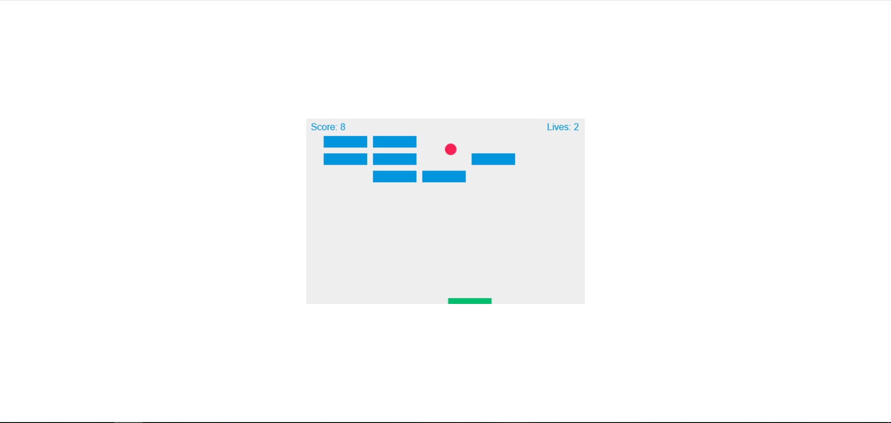
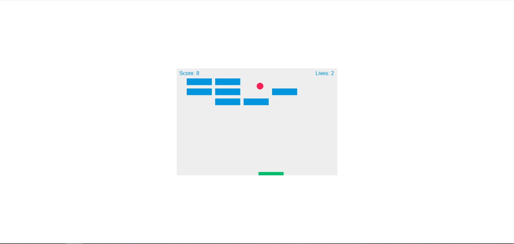

Anne-Gaëlle Terrentroy
Développeuse Web Fullstack, je travaille de manière agile afin de développer vos projets & votre activité
Services
Site vitrine
Le site vitrine permet d'avoir une image professionnelle, de présenter des services ou
des produits, sans vendre en ligne. Son objectif est d'apporter une présence digitale à toute personne
ayant un bénéfice à gagner en étant visible sur le web.
Le but final est d'acquérir des contacts
et/ou des clients ou encore d'élargir le public cible.
Je réalise le site vitrine sur
mesure en fonction des besoins et du secteur d'activité.

Site e-commerce
Le site E-commerce (ou site marchand) permet de vendre ou de commander des
produits ou des services en ligne. Les divs peuvent être triés par prix, thème, ou autre en fonction du besoin.
Le paiement peut se faire en ligne, mais pas forcément. En effet, cela peut concerner uniquement la
réservation d'un service ou produit.
Je développe votre site marchand de façon à ce qu'il soit
performant, attractif et ergonomique.

Application web / Logiciel métier
Une solution innovante spécifique à votre entreprise qui répond à des besoins ou des idées
précises.
Par exemple, elle peut être créée pour la gestion de stock, gestion de
livraisons, avec statistiques, etc.
Plus concrètement pour automatiser
des services, faciliter des processus, stocker des données de manière sécurisée, ou
autre, dans le but de gagner du temps et augmenter votre productivité.
L'appli est ensuite
disponible via les PC, smartphones et tablettes connectées.
Elle est entièrement personnalisable et réalisable
sur mesure sur la base des fonctionnalités demandées.

Gestionnaire de contenu
Un gestionnaire de contenu sert à intégrer facilement un site web ou site marchand. Celui-ci permet ainsi au
propriétaire de pouvoir gérer lui-même le contenu de son site.
Je vous accompagne dans la mise en
place du gestionnaire de contenu (CMS) et du site internet.
Ensuite, tout est possible : ajouter,
modifier, supprimer des posts ou des produits; tout cela est à portée de clic

Audit de qualité Web
L'audit est le meilleur moyen pour mesurer les qualités et les défauts d'un site web. Il
sert de point de départ pour planifier une éventuelle refonte ou évolution
du site. Le moteur de recherche Google lui-même s'appuie sur la qualité pour classer les sites web lors des
recherches. La qualité n'est donc pas à négliger lorsque vous voulez que votre site ait un impact.
Je réalise des audits afin de mesurer l'accessibilité, les performances,
l'ergonomie, les qualités techniques et la visibilité de
votre site, et pour ce faire, j'utilise divers outils afin d'optimiser l'audit.
Cette analyse selon le modèle VPTCS (visibilité, perception, technique, contenus, services)
permet de donner des axes d'amélioration dans le but d'accroître le public
cible et améliorer la qualité globale de votre site web.
Pour faciliter la compréhension, tous les résultats sont documentés et
commentés via le rapport d'audit.

Curriculum Vitae
Chef de projet digital, marketing et conception de site
- Développeur Web - Freelance / depuis octobre 2019 / AT DEV
- Développeur Web - Alternance / en cours / CRIJ Réunion Réalisation d'une application web de recherche
- Chef de projet digital / 1 an - alternance / ESRN
Développeur Web Fullstack
Certifications
- Experte de la qualité en projet Web - Opquast
- Coder et déployer une application web simple
- Méthodes agiles de gestion et amorçage de projet
- Responsive Web Design - Free Code Camp (PDF)
Master MEEF Second Degré
- Professeure d'anglais (2nd degré) & particulier / 5 ans / Académie de la Réunion
- Agent administratif / 2 mois / Préfecture de Saint-Denis
- Agent au RCS / 8 mois / TGI de Saint-Denis
Compétences
- Gestion de projet
- Design Mobile-First, Responsive & Accessible
- Tests & debugging sur différentes plateformes et navigateurs
- Développement agile (Scrum / Kanban)
Portfolio
ADRIE-Collecte Appli Web

Plateforme de gestion de
points de collecte pour l'ADRIE
Réalisée avec Laravel
Humans United Appli Web

Participation à la
Webcup 2019
Site entièrement accessible et responsive
Réalisé avec Laravel
Reunion Island Site vitrine Gestionnaire de contenu
Site vitrine Reunion
Island
Réalisé avec Wordpress
Modification aisée
Vuegram Appli Web En cours

Application monopage de réseau
social
Réalisée avec Vue.js et Firebase Tools
En cours de développement
To Do List Appli Web

Gestion de tâches à faire
Réalisée avec Vue.js
Déployée sur Firebase
Tri Sélectif Site vitrine

Page web d'information
Réalisée à partir d'une
charte graphique spécifique
Réalisée en SCSS + framework
Bulma
350MS Appli Web

Application de gestion d'évènements e-sports
Les utilisateurs peuvent s'inscrire aux events
Réalisée en groupe avec Laravel
Plateforme de vote en ligne Appli Web

Application de vote réalisée à la demande
de Red Samurai
Réalisée avec Laravel
Illdy Site vitrine

Page web démo
Réalisée à partir d'une charte graphique
spécifique
Réalisée en SASS


 
